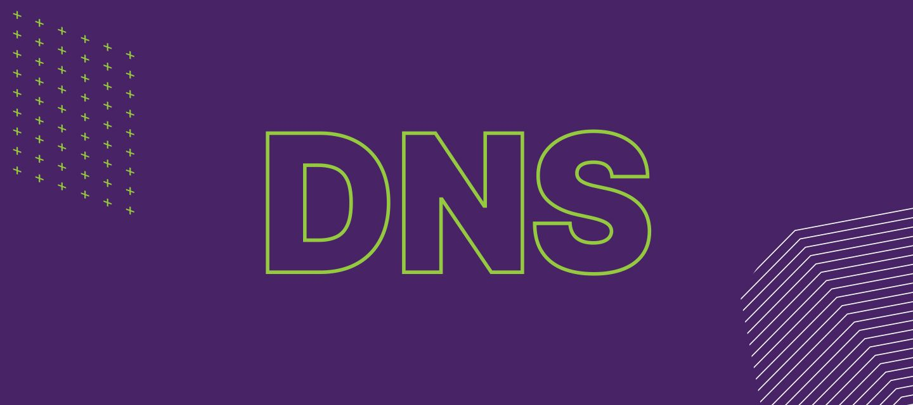

Win11开启DNS over HTTPS

之前发了不少关于DNS的文章，可以参考，我也把相关的文章放在下面方便各位查看。Windows11如何配置DNS over HTTPS（加密DNS），下面就简单地记录一下，备忘。
1.查看系统已经收录的加密DNS服务
右键开始图标，选择Windows终端（管理员）
输入（复制代码，右键单击）如下内容，即可查看系统已经收录的加密DNS服务
netsh dns show encryption2.添加加密DNS服务
可以参考之前的文章：安全DNS(DoH,DoT)推荐。比较推荐使用DNS Pod，当然，自己建一个Adguard Home，使用加密DNS也是不错的选择，不使用53端口，一般不会被封，但是需要自己购买服务器、域名、备案、自己折腾。
netsh dns add encryption 119.29.29.29 “https://doh.pub/dns-query” #前面的IP地址是DNS的IP地址，后面就是加密的链接。netsh dns show encryption#再次确认是否添加成功 3.修改Windows11的DNS设置
打开网卡或者WiFi，点击下方的硬件属性：
在DNS服务器分配右边的编辑，里面输入你想用的DOH服务，保存即可。